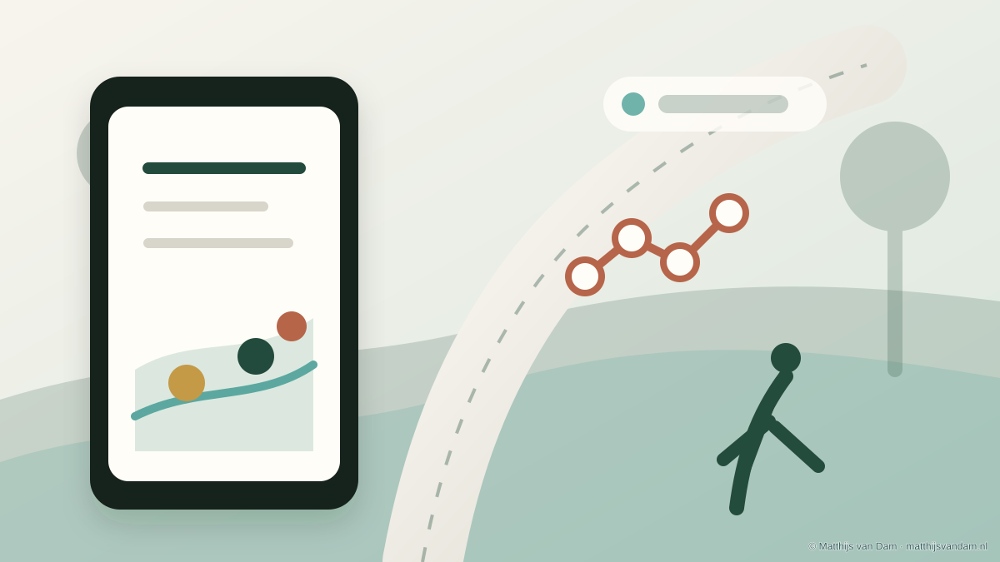

Najaar 2025
We Walk demo: wandelen door een AR-route op de campus
In het najaar van 2025 is binnen het We Walk-project een eerste demo/pilot gemaakt waarmee je via je smartphone een augmented reality-route over de campus van Tilburg University kunt lopen.
De demo is ontwikkeld door een student van Tilburg University, onder begeleiding van het team rond de IQONIC Incubator. De eerste versie laat zien hoe wandelen, campusomgeving en digitale interactie samen kunnen komen in een laagdrempelige AR-ervaring.
Tijdens de route verschijnen digitale elementen in de echte omgeving op het scherm van de smartphone. Daarmee kan wandelen speelser en concreter worden gemaakt: niet alleen een stappendoel, maar een route die onderweg iets laat zien of vraagt.
Voor We Walk is deze demo vooral een tastbare eerste stap. De pilot helpt om te onderzoeken hoe augmented reality gebruikt kan worden om bewegen aantrekkelijker te maken voor mensen die extra ondersteuning kunnen gebruiken om in beweging te komen en te blijven.
Bron: projectinformatie We Walk, 2025; Tilburg University, informatie over de IQONIC Incubator.